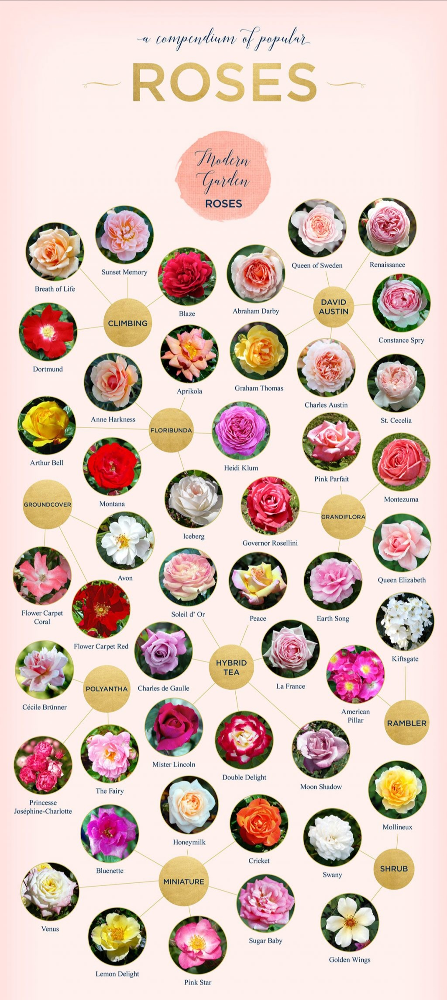
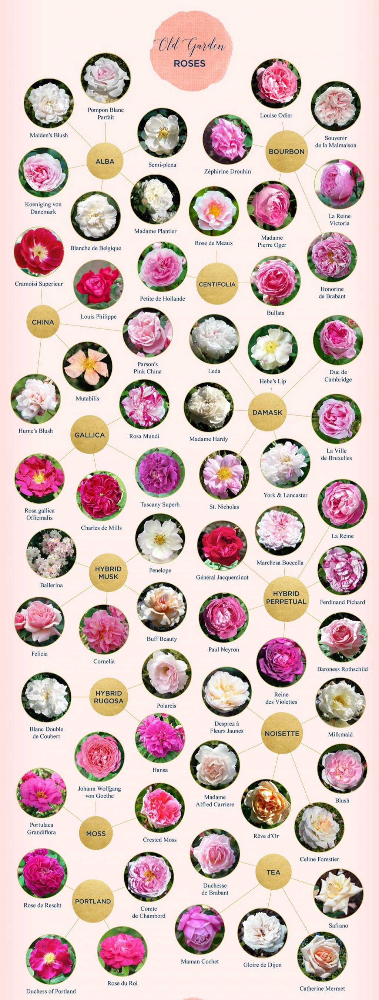
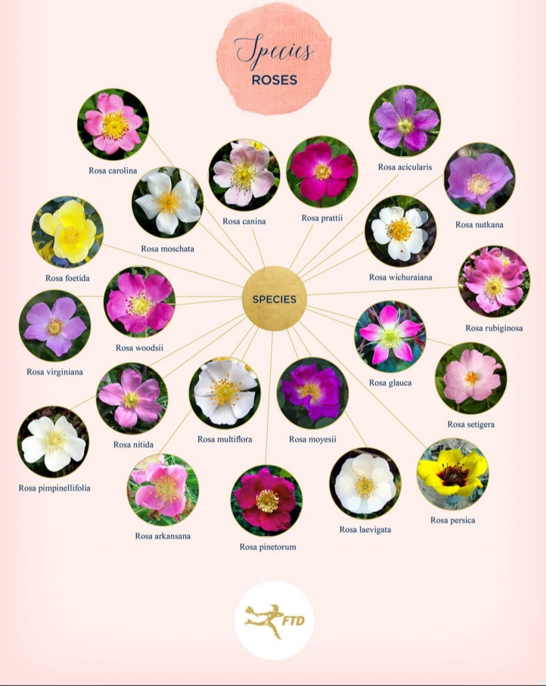

.png)
Rose Flowers
About US :-
If you want to buy flowers online ? are you looking for sudan flower delivery shops ? i take advantage of the opportuinities and send the most beautifyl flowers and roses to those you love to express everything in your heart. i do not need to get tired in searching for suitable roses, but rather shop while you are at home via the enternet . all you have to do is choose a suitable flower bouquet and you can order it online , or deliver roses via the enternet to those you love directly, even if in another country and abroad i invite you to try a home delivery , its really an enjoyable experince Rose flowers is ine of the largest international stores in delivering roses in egypt ,saudi Arabia , the UAE, oman, and many more from european countries . one of the features of rose flowers store is that they go directly to the main source of flowers and gifts to offer thier customers the best prices and provide them with the most quality and qualitative services.


